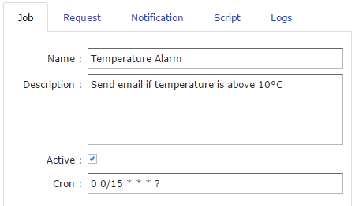
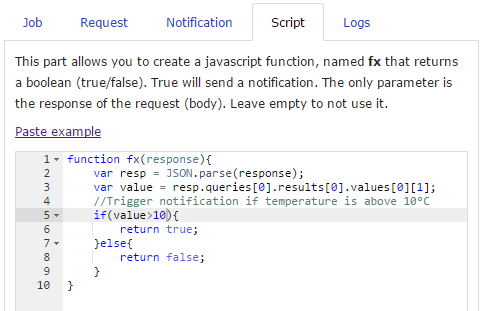
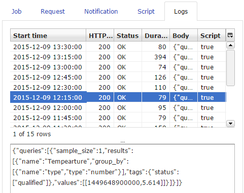

This section contains common tasks in Webcron, to get new users using the system quickly and easily.
Click the new button.
Define its execution period using the cron parameter (Documentation)
Check the Activate checkbox to enable the job.
Choose the request method (GET, POST, PUT or DELETE) Define the url Set the parameters to send for PUT or POST methods It can be :
title=foo
body=bar
userId=1
{
title: 'foo',
body: 'bar',
userId: 1
}
The response returned by the web request can be processed using a script. The result will trigger or not an email notification. The javascript function must be named fx et contains one unique parameter which is the response from the web request. This fonction must return true or false. When true is returned, an email will be sent.
An email can be sent using :
Available variables are :
Click the Add button to create the new job.
Select the job to modify in the list and clicke the Edit button. Make your changes in the editor’s window. Click the Update button.
Logs can be visualized in the Logs tab (Right panel). Select a log to view the body’s response of the request.
Job can be runned manually. Click the Run button to execute a job. The result will be added in the logs.